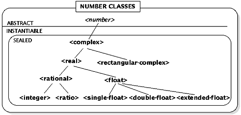

Dylan supports several kinds of numerical representations. The classes for these representations are placed in a hierarchy of abstract classes corresponding to mathematical number types. The abstract classes have no direct instances but are useful for specialization. The complete class hierarchy is shown below. Abstract classes are shown in italics. Sealed classes are shown in bold.

Picture 3
The <single-float>, <double-float>, and <extended-float> classes implement the IEEE standard floating-point formats FN34 .
Automatic Type Conversion
The Dylan rules for automatic type conversion are the same as in Common Lisp (X3J13): floating-point contagion (with rational contagion for comparisons), rational canonicalization, and complex canonicalization. Argument coercions are implemented by the individual methods on the arithmetic functions. Because of the decomposition of multiargument calls to arithmetic functions into calls to the binary versions of those functions, coercions are performed in left-to-right order.
Complex Numbers
The class <complex> accepts the init-keywords real:, imag:, magnitude:, and angle:. The arguments are interpreted as follows:
These functions are used to create complex numbers.
Properties
Arithmetic Operations
See Also: Dylan Design Notes: Variadic Operators (Change)
See Also:Dylan Design Notes: Divide By Zero Signals Error (Clarifiaction)
+ and * are methods, so you cannot add other methods to them. To extend the protocol, define methods on binary+ and binary*.
and / are methods, so you cannot add other methods to them. To extend the protocol, define methods on binary-, binary/, unary-, and unary/.
These functions return the sum, product, difference, quotient, additive inverse, and multiplicative inverse of their arguments, respectively.
See Also: Dylan Design Notes: Remove Transcendental Functions (Change)
See Also: Dylan Design Notes: Remove Trivial Logical Operators (Change)
See Also: Dylan Design Notes: Remove Transcendental Functions (Change)
See Also: Dylan Design Notes: Variadic Operators (Change)
lcm and gcd are methods, so you cannot add other methods to them. To extend the protocol, define methods on binary-lcm and binary-gcd.
<number> [Abstract Class]
<real> [Abstract Class]
<float> [Instantiable Class]
<single-float> [Instantiable Class]
<double-float> [Instantiable Class]
<extended-float> [Instantiable Class]
<rational> [Instantiable Class]
<ratio> [Instantiable Class]
<integer> [Instantiable Class]
<complex> [Instantiable Class]
See Also: Dylan Design Notes: Remove Transcendental Functions (Change)
No other init-keyword combination is legal.
make-polar magnitude angle => complex [Generic Function]
odd? integer => boolean [Generic Function]
even? integer => boolean [Generic Function]
zero? number => boolean [Generic Function]
positive? real => boolean [Generic Function]
negative? real => boolean [Generic Function]
integral? number => boolean [Generic Function]
These functions test a number for the given property and return a Boolean result.
+ #rest numbers => number [Method]
* #rest numbers => number [Method]
These methods return the sum or product of their arguments. With no arguments, + returns the <integer> 0 and * returns the <integer> 1. With one argument, both return the argument. With two or more arguments, they combine the arguments in pairs by calling binary+ or binary*.
- number #rest numbers => number [Method]
/ number #rest numbers => number [Method]
With one argument, returns the additive inverse of the argument and / returns the multiplicative inverse of the argument. With two or more arguments, they combine the arguments in pairs by calling binary- or binary/.
binary+ number1 number2 => number [Generic Function]
binary* number1 number2 => number [Generic Function]
binary/ number1 number2 => number [Generic Function]
binary- number1 number2 => number [Generic Function]
unary- number => number [Generic Function]
unary/ number => number [Generic Function]
Called by +, *, , and /. Programs should not call these functions directly.
floor real => integer real [Generic Function]
ceiling real => integer real [Generic Function]
round; real => integer real [Generic Function]
truncate; real => integer real [Generic Function]
These functions are equivalent to the one-argument forms of the like-named Common Lisp (X3J13) functions.
floor/ real1 real2 => integer real [Generic Function]
ceiling/ real1 real2 > integer real [Generic Function]
round/ real1 real2 > integer real [Generic Function]
truncate/; real1 real2 => integer real [Generic Function]
These functions are equivalent to the two-argument forms of floor, ceiling, round, and truncate in Common Lisp (X3J13).
modulo real1 real2 => real [Generic Function]
modulo returns the second value of (floor/ real1 real2).
remainder real1 real2 => real [Generic Function]
remainder returns the second value of (truncate/ real1 real2).
abs number => number [Generic Function]
sin number => number [Generic Function]
cos number => number [Generic Function]
tan number => number [Generic Function]
asin number => number [Generic Function]
acos number => number [Generic Function]
atan number => number [Generic Function]
atan2 number1 number2 => number [Generic Function]
sinh number => number [Generic Function]
cosh number => number [Generic Function]
tanh number => number [Generic Function]
asinh number => number [Generic Function]
acosh number => number [Generic Function]
atanh number => number [Generic Function]
exp number => number [Generic Function]
log number => number [Generic Function]
expt number1 number2 => number [Generic Function]
sqrt number => number [Generic Function]
logior #rest integers => integer [Generic Function]
logxor #rest integers => integer [Generic Function]
logand #rest integers => integer [Generic Function]
logeqv #rest integers => integer [Generic Function]
lognand integer1 integer2 => integer [Generic Function]
lognor integer1 integer2 => integer [Generic Function]
logandc1 integer1 integer2 => integer [Generic Function]
logandc2 integer1 integer2 => integer [Generic Function]
logorc1 integer1 integer2 => integer [Generic Function]
logorc2 integer1 integer2 => integer [Generic Function]
lognot integer => integer [Generic Function]
logbit index integer => boolean [Generic Function]
ash integer count => integer [Generic Function]
The generic functions abs, sin, cos, tan, asin, acos, atan, sinh, cosh, tanh, asinh, acosh, atanh, exp, log, expt, sqrt, logior, logxor, logand, logeqv, lognand, lognor, logandc1, logandc2, logorc1, logorc2, lognot, ash are as defined in Common Lisp. atan2 is equivalent to the two-argument version of atan; logbit? is equivalent to Common Lisps logbitp.
rationalize number => number [Generic Function]
numerator number => number [Generic Function]
denominator number => number [Generic Function]
real-part number => number [Generic Function]
imag-part number => number [Generic Function]
angle number => number [Generic Function]
The generic functions rationalize, numerator, denominator, real-part, imag-part, and angle are as defined in Revised4 Report on Scheme.
lcm #rest integers => integer [Method]
gcd #rest integers => integer [Method]
With no arguments, lcm returns the <integer> 1 and gcd returns the <integer> 0. With one argument, both return the argument. With two or more arguments, they combine the arguments left to right, equivalent to calling(reduce binary-lcm 1 integers) or (reduce binary-gcd 0 integers).
binary-lcm integer1 integer2 => integer [Generic Function]
binary-gcd integer1 integer2 => integer [Generic Function]
These functions return the least common multiple and greatest common divisor of integer1 and integer2, respectively
min real #rest more-reals => real [Method]
max real #rest more-reals => real [Method]
min returns the argument that is least (closest to negative infinity). max returns the argument that is greatest (closest to positive infinity). The methods operate by calling binary<.